来源：https://evrkenoajfn.feishu.cn/docx/K34FdwGBooO3WExF6UscqfR6n2e
大家好，我是保山。
某天要投标，要求文件必须30M以下，就在论坛上翻找，耗时30分钟找到了两个解决方案：一个https://tools.pdf24.org/zh/ ，另一个是某捷6.8版本的PDF处理工具。第二天想着是不是可以借助GPT自己写一个，于是便得到了以下程序，现在回顾下整个过程。
对话过程：基本一问一答，发现问题解决问题；
技术角度过程：相关内容我还发过一个常逛的技术论坛，但会更技术一点、更细一点；
程序24年5月做的，那时候cursor还没火，主要逻辑还是从需求出发，GPT写代码，我将报错再发给GPT一步步调整，如果用cursor会更方便，如省掉我复制粘贴的过程。
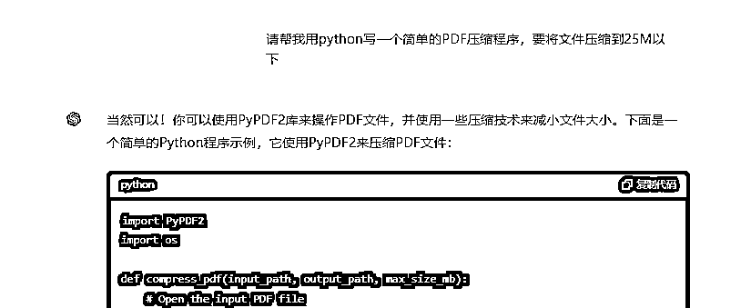
我复制代码到vscode保存运行后报错
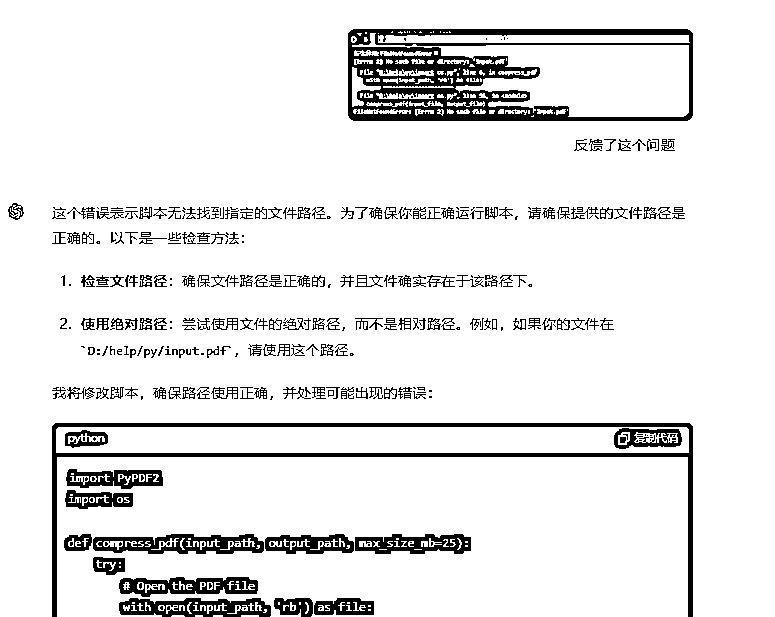
我继续反馈报错（其实还是改变刚才的路径问题，我始终没有提供文件路径，因为觉得只要把文件和代码放在一个文件夹就行，基本还是刚才的问题）
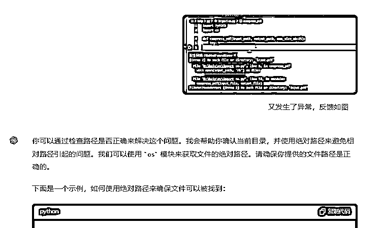
我开始处理上述路径问题，通过提供给他想要处理的文件的方式
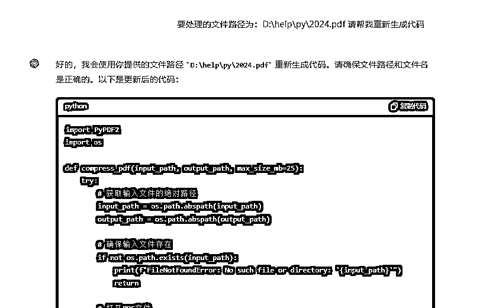
又有报错，继续反馈：
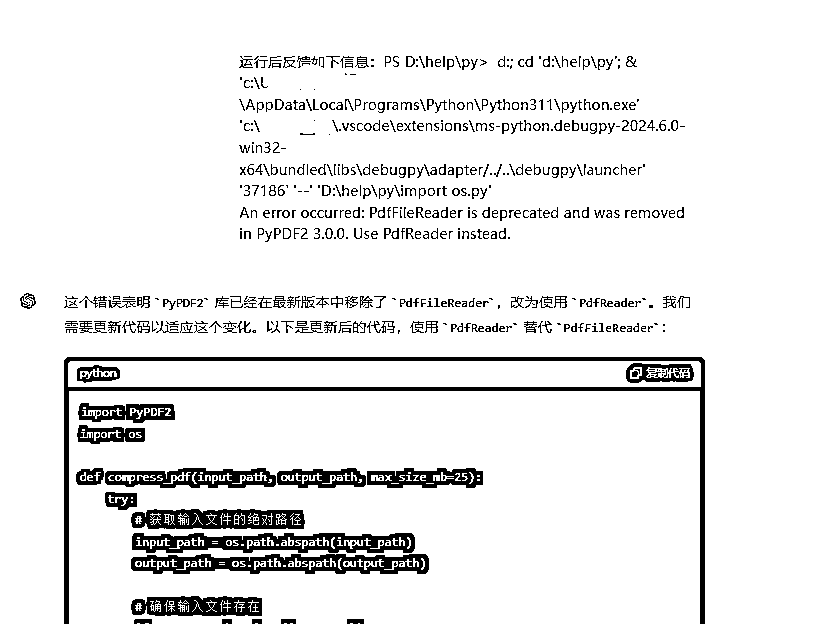
这时候已经生成压缩文件了，但我都不知道，于是仍然把反馈信息发给GPT：
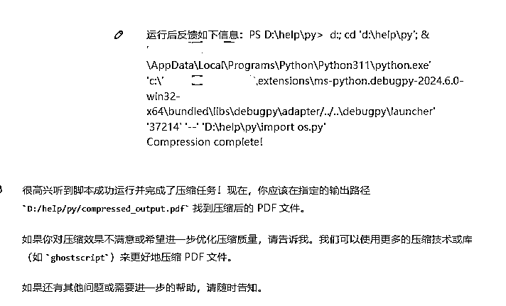
我检查发现问题：文件大小并无明显变化：
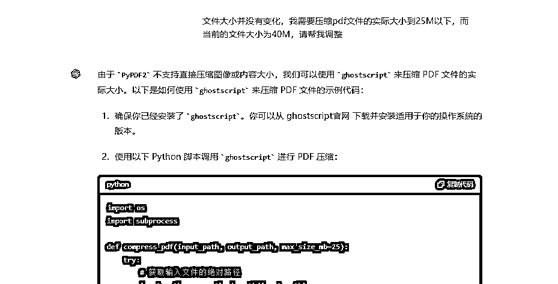
我继续保存，又出现了路径的问题：
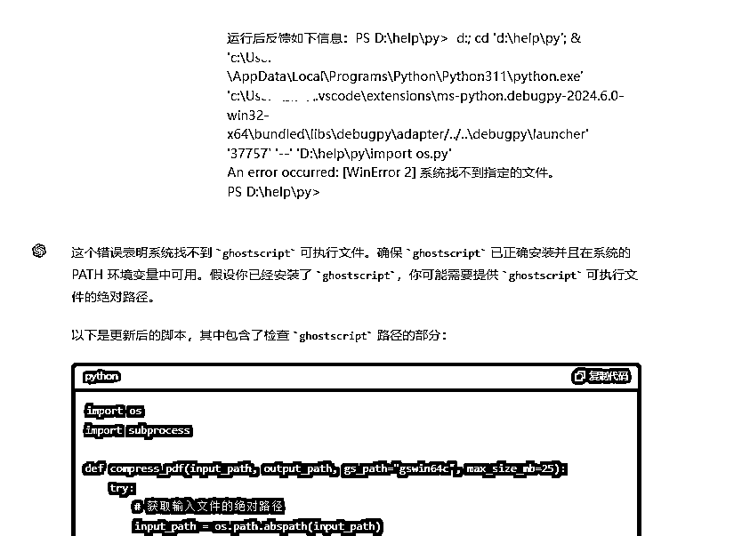
这里折腾了一小会儿，最后我又按之前的思路走了下：
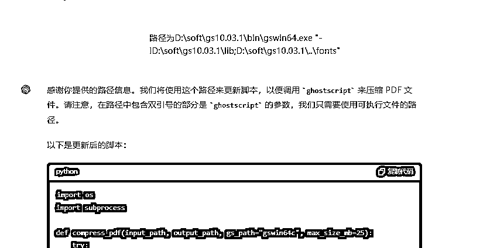
这里测试后，代码已经可以用了，于是想着如何打包：
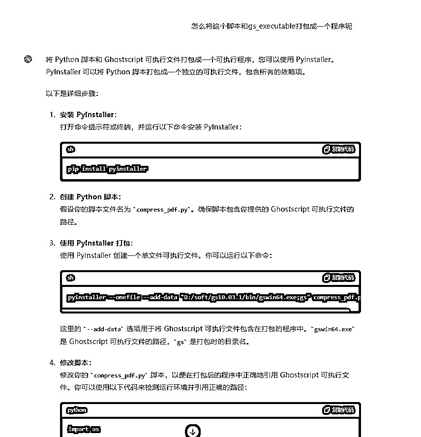
打包后，并无界面，于是
在这里，又遇到了路径问题（小白暴露无疑..）
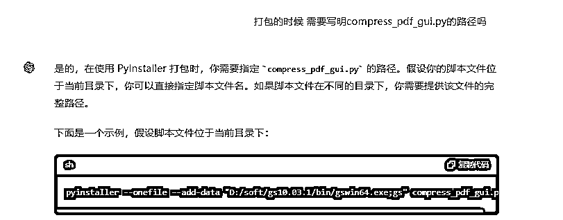
复制到别的软件后，发现无法使用（其实是因为只打包了程序，没打包附件）
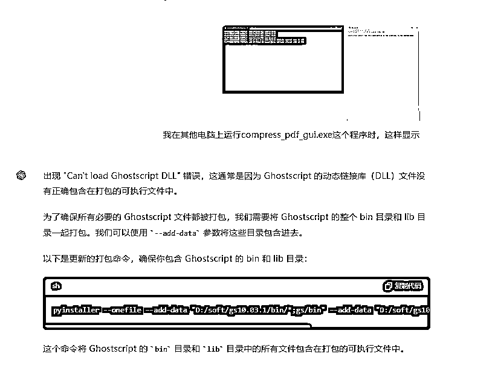
最后调优的过程
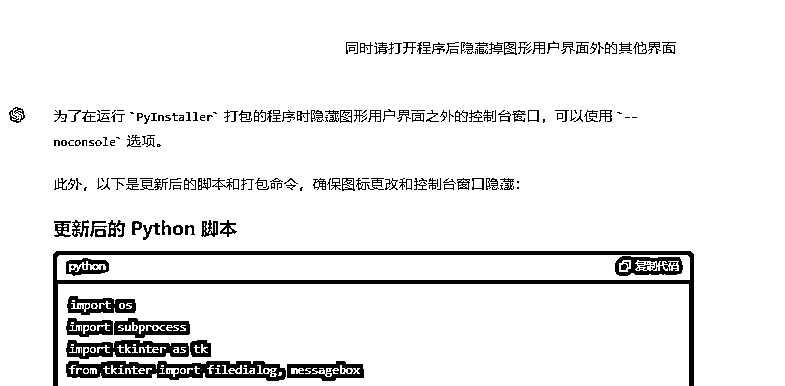
上方内容只是其中的部分关键步骤，一些我冗余的提问并未涉及其中。
相关内容我还发过一个常逛的技术论坛，以下为正文。
起因是某天要投标，要求文件必须30M以下，就在论坛上翻找，耗时30分钟找到了两个解决方案：一个https://tools.pdf24.org/zh/，另一个是某捷6.8版本的PDF处理工具。
第二天想着是不是可以借助GPT自己写一个，于是便得到了以下程序，现在回顾下整个过程。
我的需求很简单：压缩一个PDF文件的大小到30MB以下。最初，我让GPT-4o帮我写一个简单的PDF压缩程序，使用Python实现。然而，在运行他给我的代码过程中，出现了找不到文件的错误：
FileNotFoundError: No such file or directory: 'input.pdf'
GPT-4o指导我检查文件路径是否正确，并确保文件存在于指定路径。
路径问题之后，我发现实际虽然产生了新的文件，但并没有压缩；向GPT-4o反馈后，其推荐使用Ghostscript来压缩PDF文件，因为它的压缩效果更好。我按照指导下载并安装了Ghostscript，并更新了Python脚本以调用Ghostscript进行压缩。
这个时候基本基于已经能够解决我的问题了，然后我想换了设备测试，便想打包程序。
打包后在其他设备上运行时遇到了DLL加载错误：
Can't load Ghostscript DLL
GPT-4o建议我在PyInstaller打包时包含Ghostscript的bin和lib目录（之前只打包了Ghostscript程序）。于是，我更新了打包命令：
pyinstaller --onefile --add-data "D:/soft/gs10.03.1/bin/*;gs/bin" --add-data "D:/soft/gs10.03.1/lib/*;gs/lib" compress_pdf_gui.py
为了让工具更易用，我请GPT-4o帮我用tkinter创建了一个图形用户界面（之前用PyQt5生成好像，但一直不行，不知道为什么，GPT也没能归因，只告诉我重装试试）。界面允许我选择输入和输出文件夹，并选择压缩质量。以下是部分代码：
import tkinter as tk
from tkinter import filedialog, messagebox
def browse_input_file():
filename = filedialog.askopenfilename(filetypes=[("PDF 文件", "*.pdf")])
if filename:
input_path.set(filename)
def browse_output_folder():
foldername = filedialog.askdirectory()
if foldername:
output_folder.set(foldername)
def start_compression():
compress_pdf(input_path.get(), output_folder.get(), quality.get())
root = tk.Tk()
root.title("PDF 压缩工具")
为了让界面更美观，我希望添加一个图标，并隐藏图形用户界面之外的控制台窗口。GPT-4o告诉我，可以在代码中设置图标路径，并在打包时指定图标文件：
root.iconbitmap('D:/help/py/11.ico')
并且更新打包命令以隐藏控制台窗口：
pyinstaller --onefile --noconsole --icon="D:/help/py/11.ico" --add-data "D:/soft/gs10.03.1/bin/*;gs/bin" --add-data "D:/soft/gs10.03.1/lib/*;gs/lib" --add-data "D:/help/py/11.ico;." compress_pdf_gui.py
然而，在更换设备后，我发现程序无法找到图标文件：
_tkinter.TclError: bitmap "C:\Users\保山\dist\compress_pdf_gui\_internal\11.ico" not defined
GPT-4o建议在打包时包含图标文件，并在运行时动态获取图标路径：
# 设置窗口图标
if getattr(sys, 'frozen', False): # 如果程序是打包的
icon_path = os.path.join(sys._MEIPASS, '11.ico')
else: # 如果程序在源代码模式下运行
icon_path = 'D:/help/py/11.ico'
root.iconbitmap(icon_path)
我发现，Windows安全防护会报毒。GPT-4o提供了一些建议来解决这个问题，包括：
最终，我使用--onedir选项打包，并将应用程序添加到Windows Defender的排除列表，解决了报毒问题。
整个过程大概2~3个小时，我从什么都没有，到有了下方的可以压缩PDF的附件，这个过程中也就是提出需求，同时把VScode、cmd和windows的一些报错反馈截图或复制发送给GPT，不断PDCA的过程。如果是有经验的开发者其实会更快，但因为我0基础，所以出了很多常识性的问题，比如相对路径、绝对路径等等；
本工具主要依赖以下技术实现：
PS-效果&使用注意：